お子様の
調査対象：家庭教師サービスに興味があり塾または家庭教師サービスを利用したことがあるお子様をお持ちの保護者の方 331名
資料請求までわずか1分!
資料請求・体験指導のお問い合わせ

学研のプロ家庭教師ならこんなに違う!
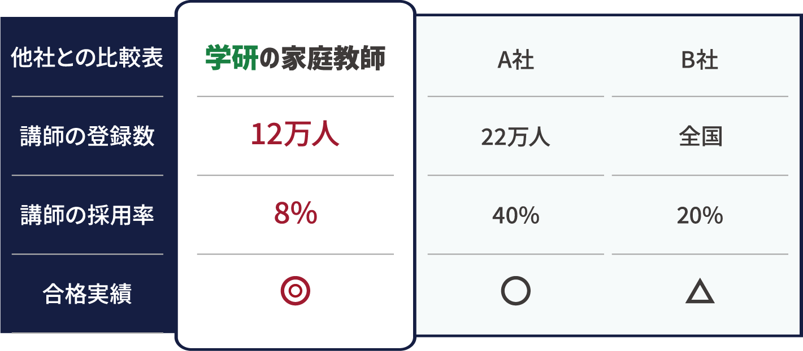
公立中高一貫校への合格者続出！
開成／麻布／海城／駒場東邦／桐朋／筑波大付属／桜蔭／女子学院／雙葉／慶應義塾附属各校／早稲田附属各校／浅野／桐蔭学園／明大附属各校／立教附属各校／中大附属各校／城北／本郷／国学院久我山／洗足学園／広尾学園／渋谷幕張／市川／昭和学院秀英／栄東／浦和明の星／江戸川取手／都立小石川中等／都立立川国際中等／都立両国高附属／区立九段中等／県立相模原中等／県立千葉／県立東葛飾etc.
進学塾別の個別対策
も可能！
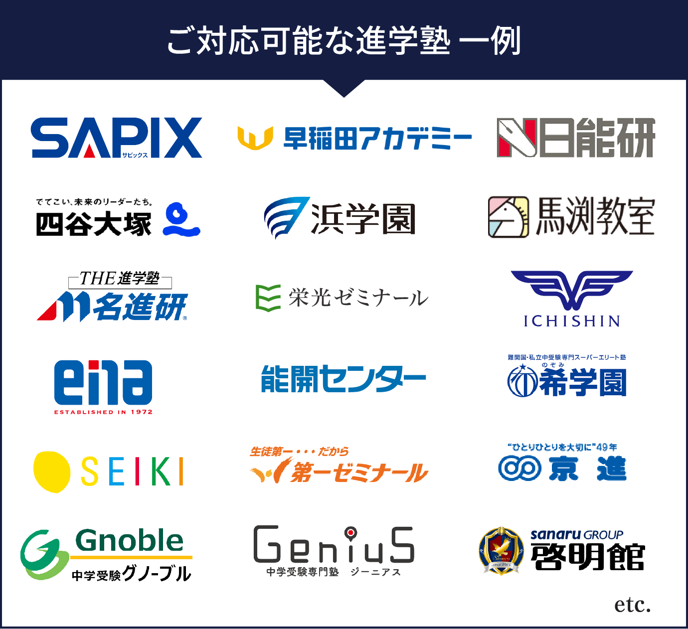
柔軟にご対応いたします！
こんなお悩みありませんか？
WORRIES
- 進学塾の授業についていけない
-
進学塾で上位のクラスに
上がれない -
成績がなかなか上がらず、
子どもが自信を失っている -
このままでは志望校に
合格できるイメージが湧かない -
優秀で実績のある講師の
授業を受けたい
ご存知でしたか？
「最初の入塾テスト」
上位クラスに入らないと
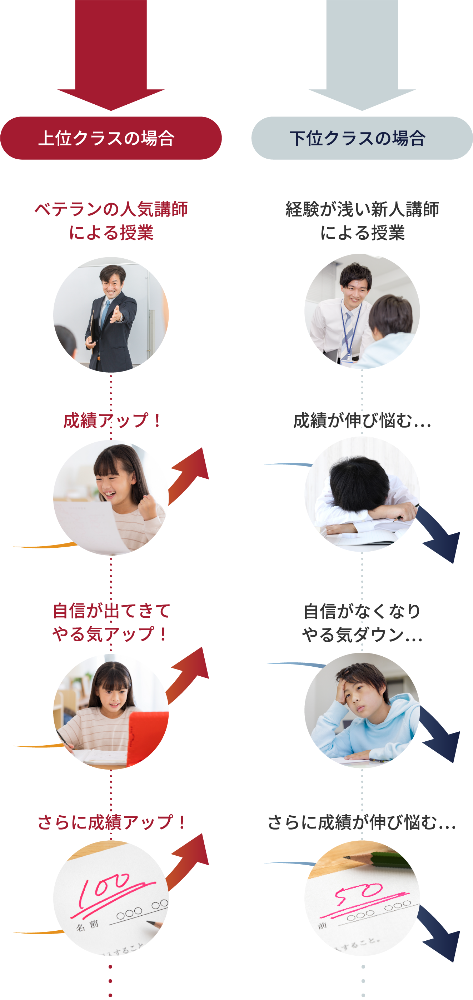
上位クラスの子たちとの差は
定期的にある
-
どうやってテスト対策をしたら
いいのかがわからない… -
口出しをすればすぐに子どもと
喧嘩になってしまう… -
学校と塾の宿題に追われて
子どもが疲弊している…
そのお悩み、
すべて解決します！
実現できる
厳選された中学受験専門の
プロ講師陣
学研のプロ家庭教師では、 厳正なる適性検査や面接などで「指導力・人物ともに合格」と判断された8％の限られた人材のみを採用しています。
豊富な指導実績・合格実績がある精鋭の講師陣が揃っておりますので、皆さまのご期待に沿った質の高い授業のご提供をお約束いたします。
LECTURER
指導方針・最重視していること
①指導の方針
前提として生徒様の成績・学力次第にはなりますが、塾でわからなかったことのフォローを中心に指導します。塾の方針により、以下のA・Bのどちらかのパターンが多いです。
A：塾で習ってきたことの復習がベース（※SAPIXに多い）
B：前学年や前の単元で抜け漏れが多ければそこの復習（※予習シリーズを扱う塾に多い）
志望校が御三家などの上位校の場合は、塾の内容だけではなく過去問対策などのプラスアルファをサポートすることも多いです。
②サポートで最重視していること
しっかりと保護者様のお話を聞いて、保護者様の不安や悩みを取り除くことを意識しています。 特に志望校情報などの学校に関する情報や不安に対してのアドバイスが多いです。生徒様本人に受験意欲が高い場合は、大学受験くらいのイメージで大人として扱いながらアドバイスをしていきます。逆に、生徒様本人に受験意欲が低い場合は、少しても意識を高めてもらえるように声掛けをしていきます。
③アドバイスなど
中学受験はやることが多く、生徒様・家庭だけだと優先順位をつけられないことも多いと思います。しっかりと優先順位をつけながら学習することで、限られた時間の中でも効果的に進めることが可能です。
出来ていること、苦手なところをしっかりと把握しながら勉強していきましょう！
指導方針・最重視していること
①指導の方針
科目ごとに重要意識を変えることを気を付けています。例えば「国語」では、丁寧に読み込むことを重視しています。塾で予習が禁止されている場合は、復習を中心にしながら印をつけて読み込み、予習が可能な塾の場合は、事前に読んで塾の内容が頭に入りやすくすることを意識しています。
「算数」に関しては、解き始めと考え方を記録することを重視しています。基本的には塾での復習や課題の解説をメインに行っていますが、解き始めを意識して取り組むことが最も大切だと考えています。そのため、間違いを分析できるように消しゴムを使わず、途中式を縦に揃えて考え方を追跡できるようにすることなどを行っています。
②サポートで最重視していること
保護者様にも学習への関心を持っていただくことを重視しています。例えば、国語では、生徒様がどんなことを身に付けているかを把握することがモチベーションの向上につながると考えており、算数に関しては、問題へのアプローチ方法への着目をお願いしています。
私たちは、保護者様とお子様が一緒に取り組み、「できた」ことを発見したり評価したりすることが大切だと考えています。そのため、講師と家庭との情報共有を通じて、お子様の成長に保護者様が気付けるような環境づくりに努めています。
③アドバイスなど
しっかりと塾の学習に取り組めるように、塾に楽しく取り組めるように、家庭教師では下支えをしていくことが最重要と考えています。志望校合格に向けてしっかりとした土台を作って、学習に臨んでいきましょう！
各進学塾対策のノウハウを熟知
約40年の指導実績を基に、各進学塾のカリキュラムを把握し、お子様に最適な学習をご提案しております。
これまで積み上げてきたノウハウを基に、「宿題の管理」「クラスアップ対策」「模試対策」「志望校対策」に対応し、志望校合格へと導きます。
講師の中には「元々、SAPIXで指導をしていた」「日能研に通っていた」などの講師も多数おりますので、各進学塾に特化した細部の対策まで行なうことが可能です。
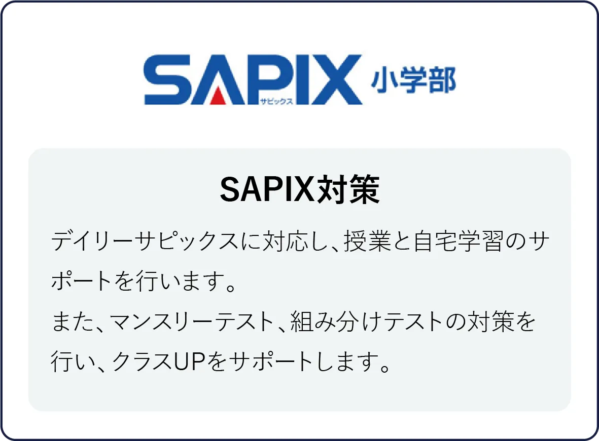
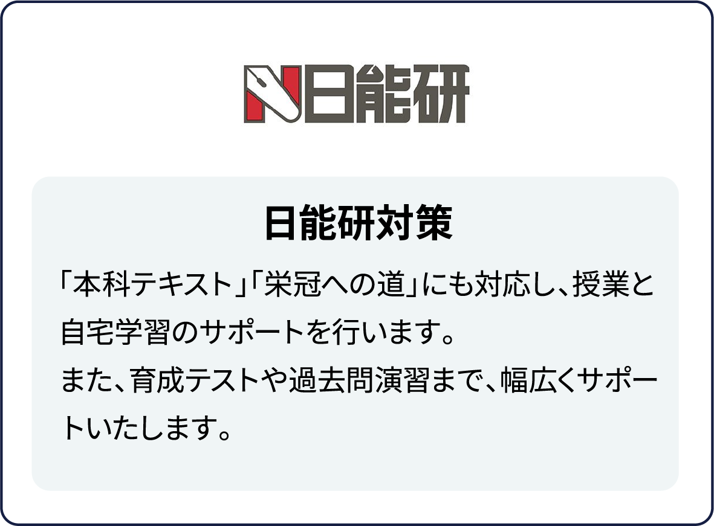
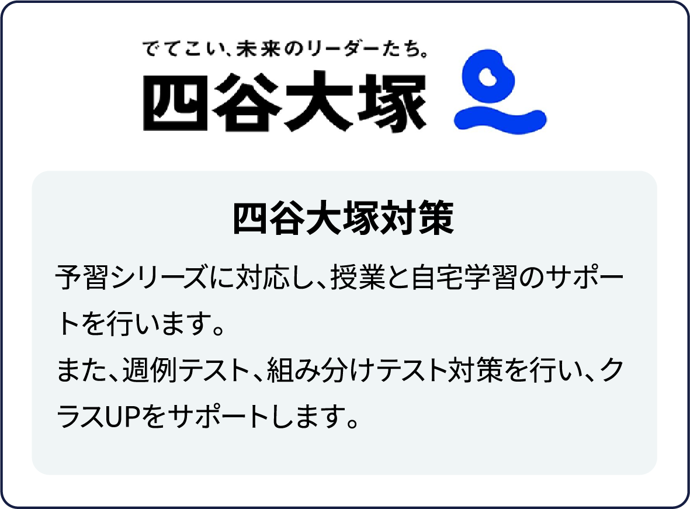
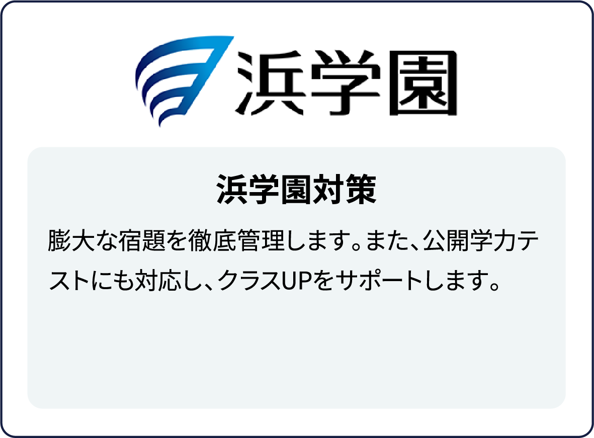
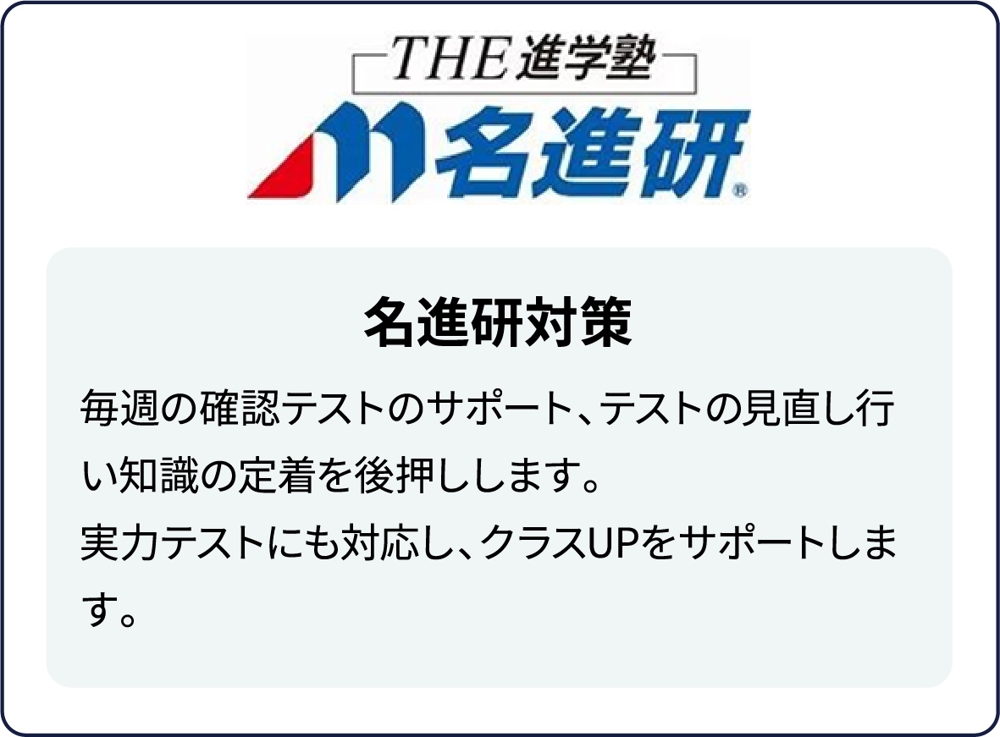
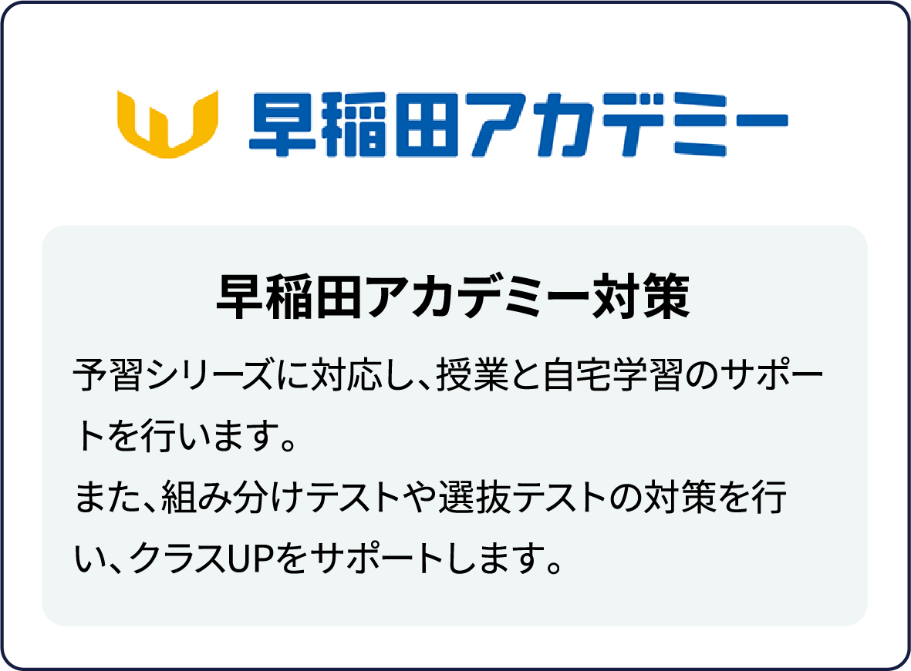
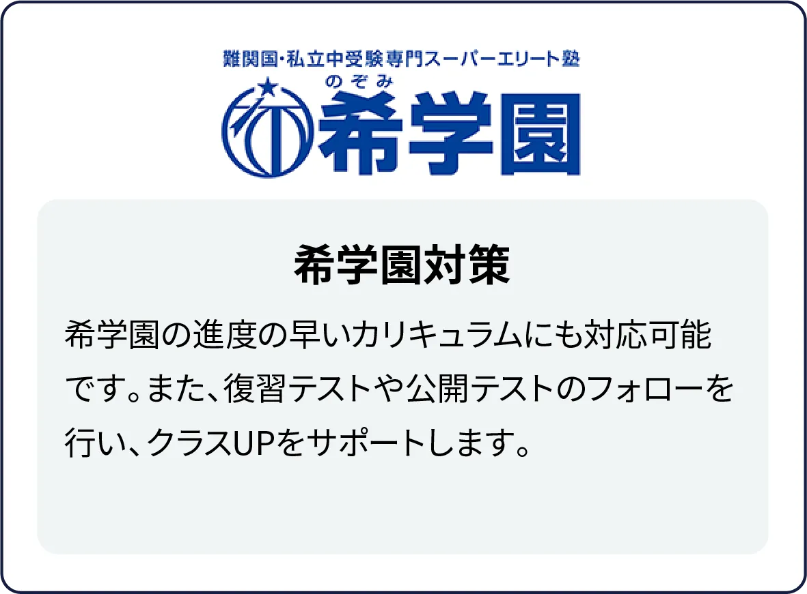
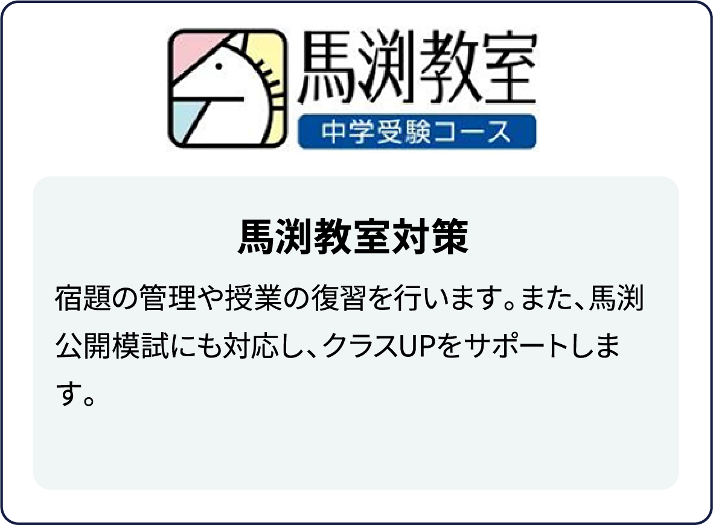
満足度98%のマッチング
講師との相性面は保護者様も不安に思われることもあるかと存じます。
教務部がヒアリングをさせていただき、ご希望・得意領域・雰囲気などをしっかり見定めて、「この講師で大丈夫」とご納得いただいてから授業が開始される安心のシステムを採用しています。
講師との出会いは、人と人との出会いでもあり、多感な時期のお子様にとってはとても大切なものであると考えております。
お子様にとって、「人生の師」ともいえる教師をご紹介できるよう努めていくことが、学研の家庭教師のポリシーです。
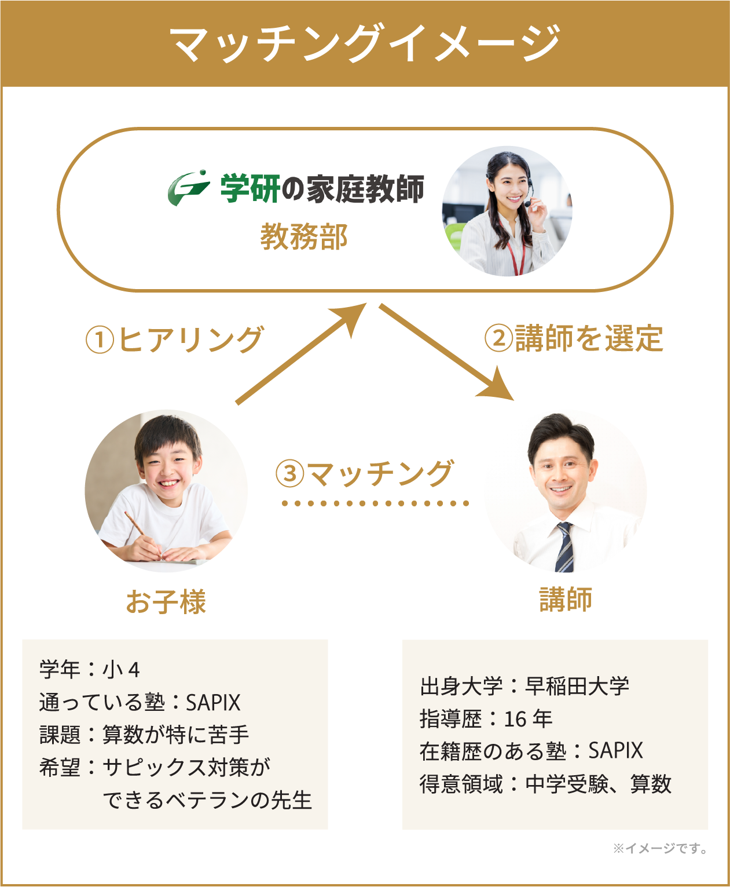
学習カリキュラム
一人ひとりのライフスタイルに合わせて適切な学習カリキュラムをご提案させていただきます。
「塾の宿題は平日のこの時間内に終わらせる」「土日のこの時間は予習・復習に充てる」など、1週間の明確なスケジューリングを行なうことで、効率が良く無駄のない学習の習慣づけを実現いたします。
質の高い学習を毎日コツコツと計画的に積み重ねることが合格への一番の近道です。
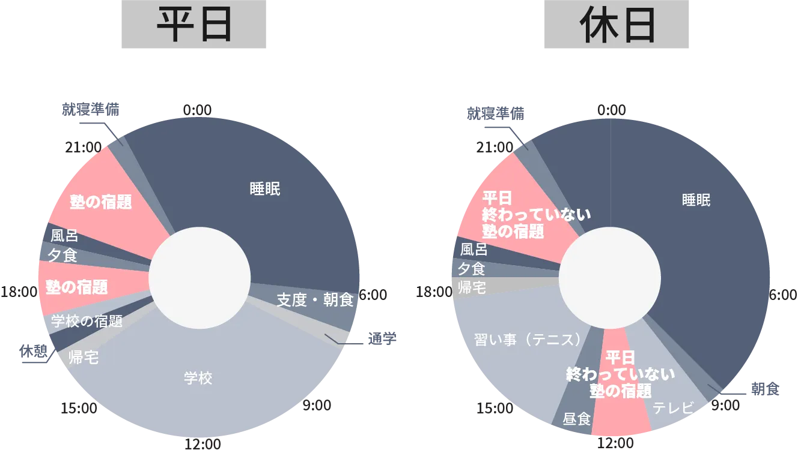
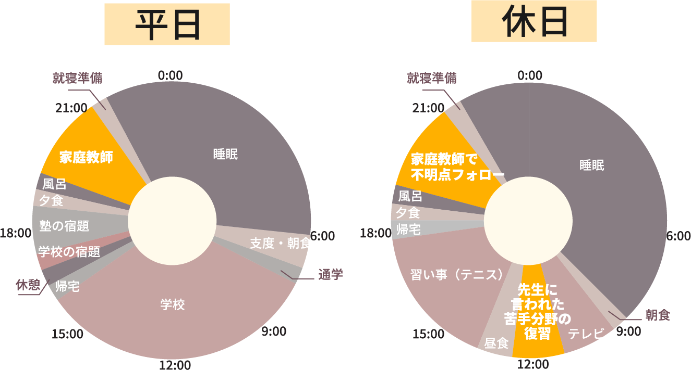
思考を止めさせない授業
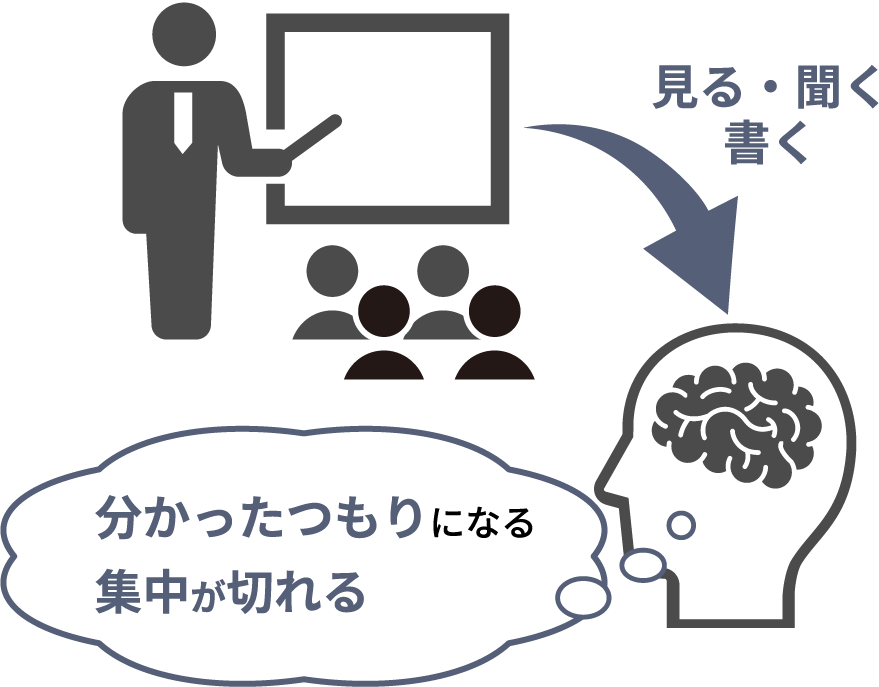
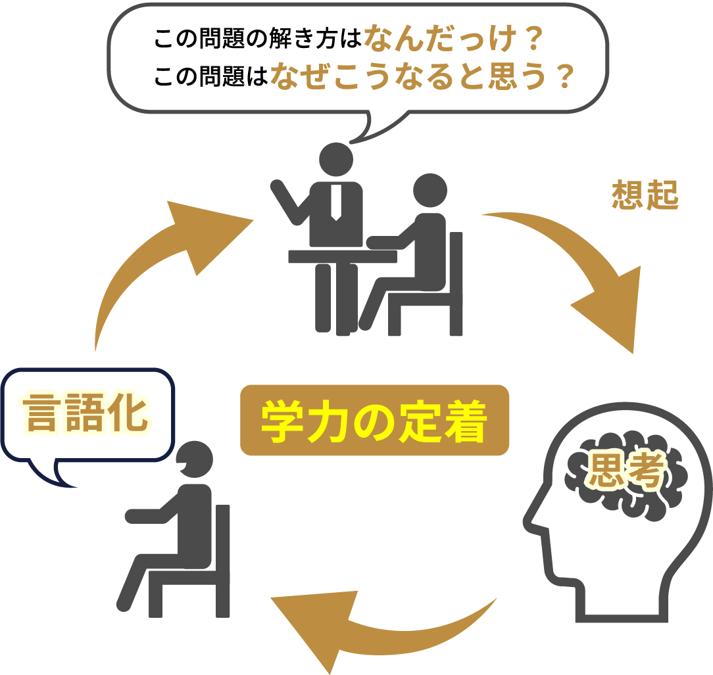
一方的な受け身の授業になると、ほとんどのお子様は集中力が切れていき、思考が止まってしまいます。
真剣に聞いているお子様でも、「聞いてるつもり」「分かったつもり」になっていることが多いです。
そしてこの現象は、1対1の授業であっても本質を理解していなければ、同じようなことが発生してしまいます。 学研の家庭教師では、1対1授業の本質を活かし、お子様自らが情報をアウトプットする対話型の授業を取り入れております。
どこよりも差がつく!
まずは、資料請求からはじめてみませんか？
早く始めれば始めるほど、大きく差は開きます。
コース料金・一覧
COURSE
合格実績のある精鋭プロ講師が、塾の宿題の管理から過去問対策まで、ムリ・ムダなく合格までの最短ルートをナビゲート！
全国最難関中学に合格実績のあるトップレベル講師陣が、過去問分析から新傾向問題対策まで万全の徹底サポート！やり残しや悔いなく、受験本番まで導きます！
※オンライン授業の料金は上記と異なります。詳細はお問合せください。
FLOW
01
カウンセリング（無料）
まず、お子様には学研の家庭教師の講師、または専属スタッフによる体験授業、カウンセリング（学習相談）を受けていただきます。
カウンセリングでは、当社の豊富な経験・指導実績を活かして、お子様の現在の問題点とその原因を分析。
性格・学校・家庭環境なども考慮しながら、お子様にとってベストな講師と指導内容をご提案させていただきます。
申し込みフォーム、またはお電話でお気軽にお問い合わせください。ご相談やご質問なども受け付けております。
02
体験指導（90~120分）
大切なのは、家庭教師というスタイルがお子様に合っているかをしっかり判断することです。 「自分に合った勉強のやり方」をみつけることが成果につながります。まずは当社の専任アドバイザーによる体験授業で家庭教師の雰囲気を味わっていただき、お子様の反応を見てください。
詳細はお問い合わせください。
学研の家庭教師体験レッスンの
3つのポイント
- ❶ お子様の現在の実力がわかります
- ❷ お子様にぴったりの勉強方法が見つかります
- ❸ 今までの家庭教師との違いがわかります
ご入会を強くおすすめすることはありませんので、
ご安心ください。
FAQ
大切なお子様の勉強方法ですから不安なことも多いはずです。
その他、ご不明な点などございましたら、お気軽にお問い合わせください。
成績についてのご質問
ほんとうに成績は上がりますか？
学研の家庭教師は、教務部に対して毎月の報告を義務付けております。「指導報告書」「定期ミーティング」「個別ミーティング」のシステムにより、お子様の指導状況をチェックし、目標達成までの学習管理を教務部のバックアップにより綿密に行いますので自主学習の習慣と共に学力が向上していきます。
受験対策は大丈夫ですか？
1対1だと競争心がなくなったりはしませんか？
弊社は、受験対策として模擬テストをおすすめしており、 夏期講習・冬期講習も一部教務センターにて実施しております。 偏差値や志望校到達率の把握や単元別の習熟度チェックから、テスト慣れ、 会場慣れに至るまで、受験生のサポートはお任せください。
家庭教師についてのご質問
家庭教師は、アルバイト感覚ではありませんか？
弊社では多くの登録希望家庭教師の中から、学力だけでなく指導力や責任感等の家庭教師としての適正検査「YGPI」を実施して合否を決めております。紹介後も日々の指導状況から毎月の指導報告を義務付けるなど、しっかりとした管理をしておりますのでご安心ください。
本人との相性は合うのでしょうか？
要望や条件を詳しくお伺いし、専門のスタッフが選考にあたり、 ミーティングをした上で紹介しておりますので安心です。弊社は30年以上の実績により家庭教師の登録数も豊富なので、お子様にピッタリの家庭教師を紹介できるシステムとなっております。
家庭教師交代、進路相談などはできるのでしょうか？
大丈夫です。何かありましたら、すぐに弊社へご連絡ください。教務部による管理体制を整えておりますので、担当社員・スタッフが迅速に対応いたします。家庭教師個人ではまかなえないことを全て教務部でサポートさせていただきます。
学び方についてのご質問
特別な教材を購入しないといけないのですか？
弊社は、高額教材のローン契約による販売などは一切ありません。 お子様がお持ちの教科書等で指導を行うことができます。
勉強部屋がないのですが？
ご安心ください。リビングなどでも指導は可能です。また、自宅以外の場所で授業を希望される場合には、近隣の公共施設や家庭教師宅指導もございます。まずは一度ご相談ください。
弊社についてのご質問
テスト前の短期間だけでも申し込みできますか？
テスト前や、夏休みだけなどの短期間もお任せください。目的に応じた指導計画を立て、集中特訓を組むことができます。
病気で休んだり、用事で休んだりすると授業料はどうなりますか？
休んでしまった場合はその分の振替授業を行えます。それによって別途料金がかかることもございません。
やめたくても簡単にやめられないのではないですか？
弊社は1ヶ月前までに退会の申し出をいただければ、 いつでも退会することができます。その場合解約料は必要ありません。 また、退会申告できない場合であっても、1ヶ月分の指導料より高いお金はいただきません。 もちろん、保証金等もございません。
CONTACT